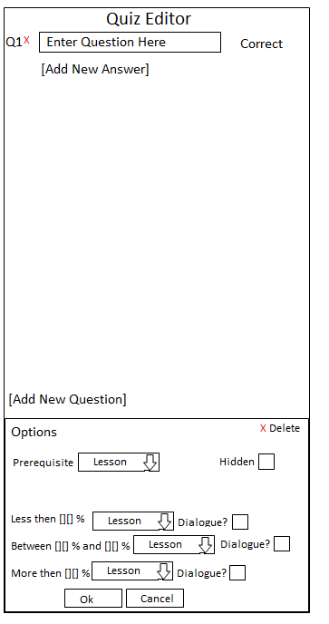
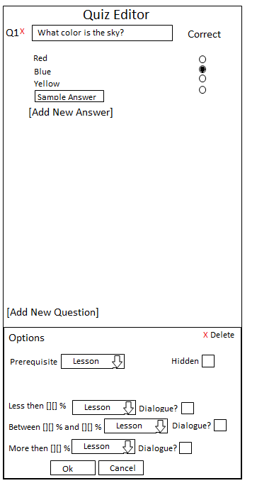
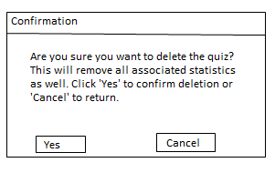
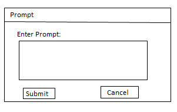
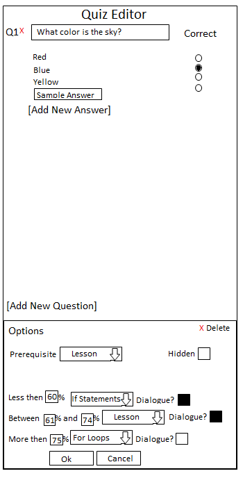
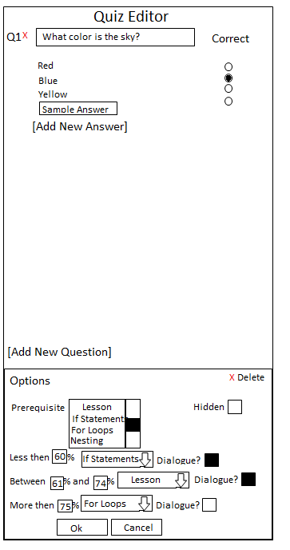

The quiz editor is accessible to instructors for creating, editing, and deleting quizs. In spirit of automated feedback, CSTutor only supports multiple choice questions. The instructor is also able to set and edit properties of the quiz, such as prerequisites [link]. With prerequisites, the instructor can identiy which lessons must be completed before being able to take the quiz. In some instances, an instructor may wish to make all quizs available immediatly in order to demonstrate knowledge in the subject without needing to go through the lessons. In other instances, an instructor may wish to unlock quizs and make them visible [link] as individual lessons are completed in order to force a student to go through the entire lesson series.
Another feature of the quiz editor are the capabilities to use pointers [link]. With quiz pointers, the instructor can direct the student to a particular lesson based on the students score. For example, if a student scores below 50%, the student may be required to retake the lesson. If the student scores between 51% and 75%, the student is encouraged to review the material before moving forward. If the student scores between 76% and 100%, the student is automatically directed to the next lesson in the series.
To add a question, the instructor hits the 'Add New Question' button. In response, a blank question will appear in the window as shown in Figure 1.

Figure 1: Adding a Question.
The figure shows the result of the blank quiz after having it the 'Add New Question' button. It is worth noting that the only question type supported by CSTutor is multiple choice.
After having created a blank question, the instructor then needs to type the question. To do this, the user must click into the text box showing 'Enter Question Here' and replaces it with the question being asked. After typing in the question, the instructor then needs to provide options for the answers to the multiple choice question. A question can have as few as two possible answers and no limit on the maximum. To add a possible answer, the user must hit the 'Add New Answer' button as shown in Figure 2.

Figure 2: Adding an Answer.
After adding a possible answer, the instructor then needs to fill in the text for the answer. To do this, the user must click into the text field reading and replace 'Sample Answer' with the neccessary text.
The final step in adding a question is to identify the correct answer. This is done by selecting the radio button next to the correct answer.
To remove a question, the instructor must hit the
'X' button next to the question being deleted. In response, the system will display a confirmation dialogue as shown in Figure 3.
Figure 3: Question Deletion Confirmation.
To confirm deleting the question, the instructor must select the 'Yes' button. To leave the question, the instructor must select the 'No' button and no changes will be made.
To delete a quiz, the instructor must hit the
'Delete Quiz' button located near the bottom of the screen. In response, the system will display a confirmation dialogue as shown in Figure 4.

Figure 4: Quiz Deletion Confirmation.
To confirm deleting the quiz, the instructor must select the 'Yes' button. To leave the question, the instructor must select the 'No' button and no changes will be made. Once a quiz is deleted, all associated student statistics will also be removed. This operation cannot be undone.
To direct the student to different sections of CSTutor based on their result of taking the quiz, the user can specify one of three different quiz pointers by editing the 'Quiz Pointer' field as shown in Figure 5. In response, the system will direct the student to the lesson after submitting the quiz
Figure 5: Quiz Pointers.
First, the instructor must specify the grading threshold by filling in the blanks. Second, the instructor must select the lesson to be pointed at by clicking in the 'Lesson' dropdown. In response, the system will display all available lessons. Finally, the user can specify if they would like a dialogue to be displayed. To do this, the user must check the 'Dialogue?' checkbox. In response, the system will display a window asking you for the prompt as shown in Figure 6.

Figure 6: Dialoge Prompt.
This prompt will be displayed to the student if they fall within that particular grading threshold. This is useful if the instructor wants to encourage a student to review a section based on their grade, but not necessarily force them to retake the lesson. Figure 7 shows a completed quiz pointers section.

Figure 7: Example Quiz Pointers.
In this sample, if the student scores below 60% they will be met with a friendly dialogue explaining that they need to retake the lesson, and will be brought back to the beginning of the lesson. If the student scores between a 61% and 74%, the student is not directed anywhere and is prompted that they are encouraged to retake the lesson but are not being forced to. Finally, if the student scores 75% or above, they are not given a dialogue and are brought to the next lesson.
To require a lesson as a prerequisite, the instructor clicks into the dropdown box labelled 'Prerequisite'. In response, the system will display a menu containing all available lessons as shown in Figure 8.

Figure 8: Prerequisite Dropdown.
The user then selects the appropriate lesson to require as a prerequsite. While it is only possible to select one particular lesson as a prerequsite, you can chain prerequsites together to create a flow for the student. For example, Lesson 2 could require Lesson 1, and the quiz could require Lesson 1 which means the user would have to complete both lessons before taking the quiz.
To make the quiz hidden to students until they have successfully completed all prerequisites, the user can check the 'Hidden' box. In response the system will make the quiz unreachable by any student until all prerequisites have been satisfied. If prerequisites have been set, as described [link here], but the instructor chooses not to hide the quiz, the quiz and its questions will be viewable by students, but students can not submit answers until all prerequisites have been met.